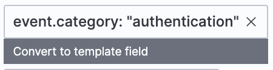
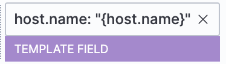
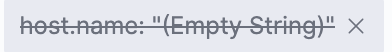
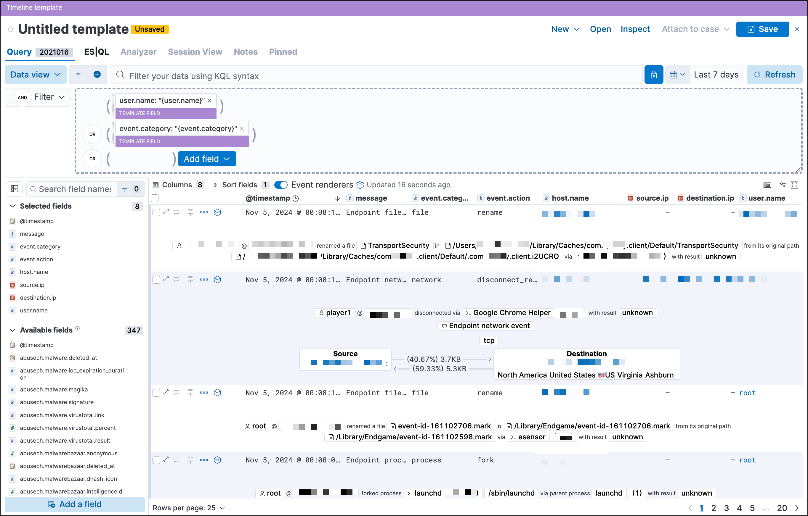
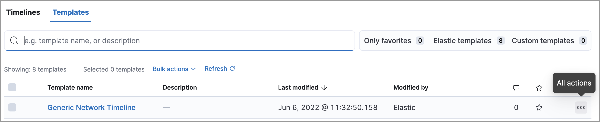

Timeline templates
editYou can attach Timeline templates to detection rules. When attached, the rule’s alerts use the template when they are investigated in Timeline. This enables immediately viewing the alert’s most interesting fields when you start an investigation.
Templates can include two types of filters:
-
Regular filter: Like other KQL filters, defines both the source event field and its value. For example:
host.name : "win-server". - Template filter: Only defines the event field and uses a placeholder for the field’s value. When you investigate an alert in Timeline, the field’s value is taken from the alert.
For example, if you define the host.name: "{host.name}" template filter, when alerts generated by the rule are investigated in Timeline, the alert’s
host.name value is used in the filter. If the alert’s host.name value is
Linux_stafordshire-061, the Timeline filter is:
host.name: "Linux_stafordshire-061".
For information on how to add Timeline templates to rules, refer to Create a detection rule.
When you load Elastic Security prebuilt rules, Elastic Security also loads a selection of prebuilt Timeline templates, which you can attach to detection rules. Generic templates use broad KQL queries to retrieve event data, and Comprehensive templates use detailed KQL queries to retrieve additional information. The following prebuilt templates appear by default:
- Alerts Involving a Single Host Timeline: Investigate detection alerts involving a single host.
- Alerts Involving a Single User Timeline: Investigate detection alerts involving a single user.
- Generic Endpoint Timeline: Investigate Elastic Endpoint detection alerts.
- Generic Network Timeline: Investigate network-related detection alerts.
- Generic Process Timeline: Investigate process-related detection alerts.
- Generic Threat Match Timeline: Investigate threat indicator match detection alerts.
- Comprehensive File Timeline: Investigate file-related detection alerts.
- Comprehensive Network Timeline: Investigate network-related detection alerts.
- Comprehensive Process Timeline: Investigate process-related detection alerts.
- Comprehensive Registry Timeline: Investigate registry-related detection alerts.
You can duplicate prebuilt templates and use them as a starting point for your own custom templates.
Timeline template legend
editWhen you add filters to a Timeline template, the items are color coded to indicate which type of filter is added. Additionally, you change Timeline filters to template filters as you build your template.
- Regular Timeline filter
-
Clicking Convert to template field changes the filter to a template filter:
 - Template filter
-

When you convert a template to a Timeline, template filters with placeholders are disabled:
To enable the filter, either specify a value or change it to a field’s existing filter (refer to Edit existing filters).
Create a Timeline template
edit-
Choose one of the following:
- Go to Investigations → Timelines. Click the Templates tab, then click Create new Timeline template.
- Go to the Timeline bar (which is at the bottom of most pages), click the button, then click Create new Timeline template.
- From an open Timeline or Timeline template, click New → New Timeline template.
-
Add filters to the new Timeline template. Click Add field, and select the required option:
- Add field: Add a regular Timeline filter.
-
Add template field: Add a template filter with a value placeholder.
You can also drag and send items to the template from the Overview, Hosts, Network, and Alerts pages.

- Click Save to give the template a title and description.
Example
To create a template for process-related alerts on a specific host:
-
Add a regular filter for the host name:
host.name: "Linux_stafordshire-061" -
Add template filter for process names:
process.name: "{process.name}"
When alerts generated by rules associated with this template are investigated
in Timeline, the host name is Linux_stafordshire-061, whereas the process name
value is retrieved from the alert’s process.name field.
Manage existing Timeline templates
editYou can view, duplicate, export, delete, and create templates from existing Timelines:
-
Go to Investigations → Timelines → Templates.
 -
Click the All actions icon in the relevant row, and then select the action:
- Create timeline from template (refer to Create a Timeline template)
- Duplicate template
- Export selected (refer to Export and import Timeline templates)
- Delete selected
- Create query rule from timeline (only available if the Timeline contains a KQL query)
- Create EQL rule from timeline (only available if the Timeline contains an EQL query)
To perform the same action on multiple templates, select templates, then the required action from the Bulk actions menu.
You cannot delete prebuilt templates.
Export and import Timeline templates
editYou can import and export Timeline templates, which enables importing templates from one space or Elastic Security instance to another. Exported templates are saved in an ndjson file.
- Go to Investigations → Timelines → Templates.
-
To export templates, do one of the following:
- To export one template, click the All actions icon in the relevant row and then select Export selected.
- To export multiple templates, select all the required templates and then click Bulk actions → Export selected.
-
To import templates, click Import, then select or drag and drop the template
ndjsonfile.Each template object in the file must be represented in a single line. Multiple template objects are delimited with newlines.
You cannot export prebuilt templates.